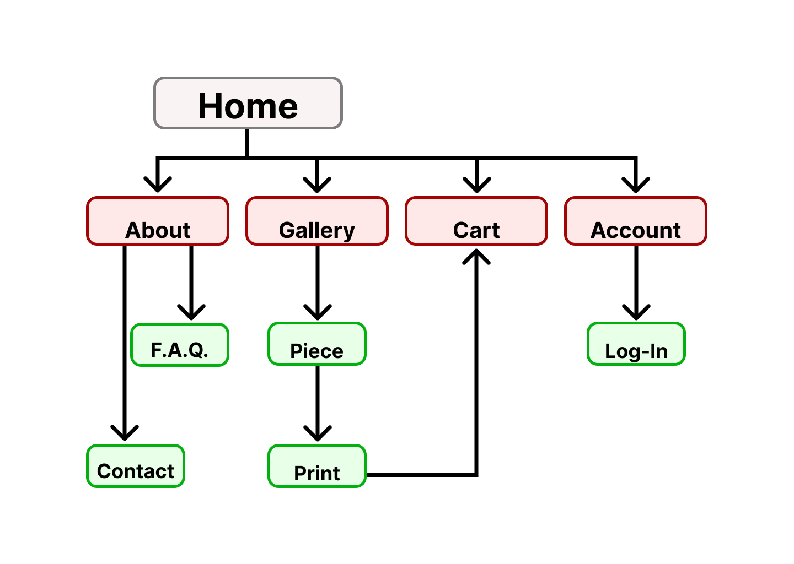
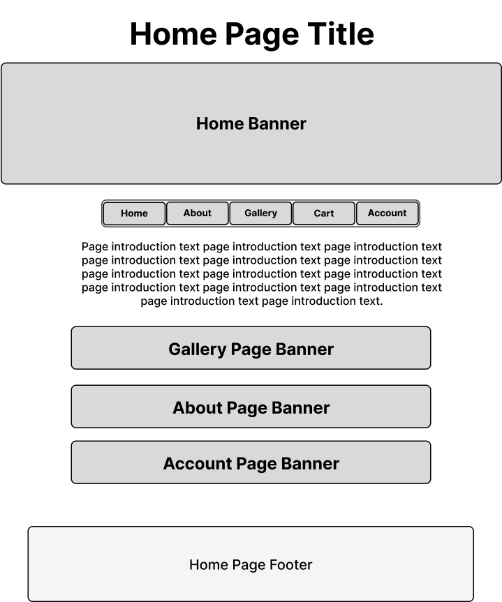
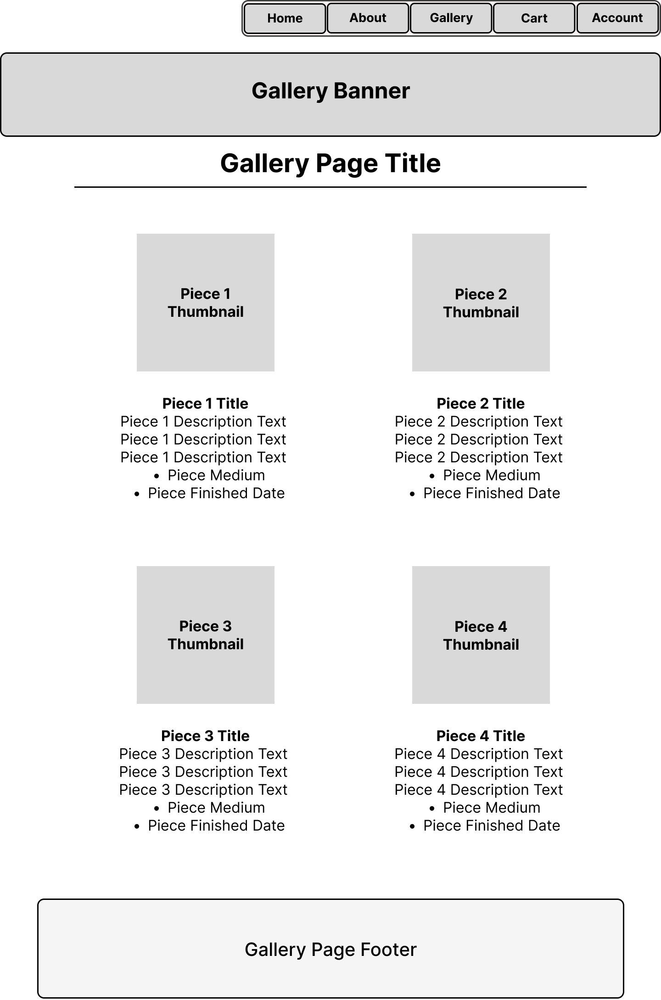

Upon looking at what type of business I would most like to create a website for, and
considering what type of website I could potentially use after finishing this class,
I decided to create a website for a small artist to share their work and easily sell
prints directly to fans. This is a topic that is close to my heart, as a small artist
looking to share my work and sell prints myself, but also requires creating a design
that is both appealing and accessible to the widest audience possible to allow the
artist to build their following, get exposure, and sell prints.
Client & Topic
I am creating a personal business website to showcase my original illustration work and
sell art prints directly to customers. This will serve as both a portfolio and a small
online shop and while it is intended for my own use, the design could serve the same
functions for a client seeking the same type of website.
Development Process & Engagement
Since I am designing the website for myself, I will research other successful artist portfolio
shops to inform content and layout. I will examine competitor sites, analyze design trends in
online art stores, and review customer expectations regarding artwork browsing and purchasing.
This research will guide my site’s user experience and structure.
Testing
I will test the website across different browsers (Chrome, Firefox, Safari) and devices
(desktop, tablet, mobile) to ensure consistent layout and functionality. I will validate
HTML and CSS through W3C tools, test all internal links, ensure image loading speeds are
optimized, and have peers review the site for usability and clarity.
Description
This website represents my personal illustration brand. The goal is to display my art
professionally while offering a simple, secure way for customers to buy prints in various
sizes and formats. The target audience includes art collectors, home decorators, and fans
of original illustration, primarily aged 20–45. Understanding this audience means focusing
on sleek, minimal design, easy navigation, and clear product presentation. I will create all
illustrations, page layouts, and product images. Stock photos may be used sparingly for mockups.
Content updates will occur as new illustrations are added or products are discontinued, typically
once a month or per release cycle.
Growth & Maintenance
The site will evolve as I create new artwork and expand product offerings. To simplify
maintenance, I’ll use template-based HTML and external CSS for easy updates. Monthly tasks
will include updating the gallery and shop pages. Quarterly, I’ll assess user engagement and
possibly update site structure or branding elements based on feedback.
Organization
The website will feature a streamlined and user-friendly organization. To streamline navigation
between pages, each page will feature a navigation bar with buttons to go to the Home, About,
Gallery, Account, or Cart pages. The below site map shows how all of the pages will be organized:

The About page will provide the user about the artist and branches into both the FAQ and Contact
pages, while the Gallery page will lead the user to one of many different Piece pages, each
dedicated to displaying a particular piece of artwork. The user can then navigate to a Print
page to select from the different Print options available for sale for that particular piece,
add that print to their Cart, and access the Cart page from there. The Cart page is where the
user would complete their transaction to purchase prints, and if the user creates an account
then their purchases will be recorded and view-able on the Account page. If the user is not
logged in, the Account page will also direct the user to the Log-in/Account Creation page.
The Home page will have a simple layout featuring a Banner and the Navigation bar at the top.
Below that will be a text introduction to the website with information about the artist or
their work, with banners further down that direct the user to the About, Gallery, and Account
pages when clicked. A wireframe of the proposed layout is below:

The Gallery page, like every page except for the Home page, will have the navigation bar justified
in the upper-right corner of the page, with the page banner and title centered on the page below it.
Beneath the title is a divider separating it from the preview images and text descriptions of the
displayed pieces. Each piece will have a 300x300px preview image with the title, description, medium,
and completion dates listed beneath. The page will have two columns of pieces descending down the
page, displaying as many pieces as the client would like to share/sell. A wireframe of the proposed
layout is below:

Security
Yes, the site will include e-commerce via a simulated cart and checkout. No content will be
password-protected since users won’t need accounts for this prototype. To enhance security,
I’ll follow best practices like validating user input, using HTTPS (SSL), and avoiding inline
scripts to minimize vulnerabilities in the front-end code.
Web Hosting
To select a host, I’ll compare providers based on reliability, price, ease of use, support
for HTML/CSS, and e-commerce functionality. SSL certificate support is essential for secure
checkout. The site will require basic shopping cart support, and possibly FTP access for uploads.
The website will use HTML5 and CSS3, with optional JavaScript if expanded later. Because
of the heavy use of different types of ink in my work, I’ve become fond of the name ‘Inque’ for
branding my work and creating a corporate identity. Domains like "InqueStudio.com" or
"InqueDesigns.com" are both available and professional while incorporating this name to maintain
company branding. This results in a domain name that is distinct, easy to remember, and fits
the brand while also being reflective of the work being shared and sold.
Marketing
I will market the site via Instagram, TikTok, and art communities like DeviantArt or Behance.
SEO will include relevant keywords in image alt tags, meta descriptions, and page titles.
Clean URLs, proper heading hierarchy (H1–H6), and fast load times will help increase visibility
in search engines and social platforms